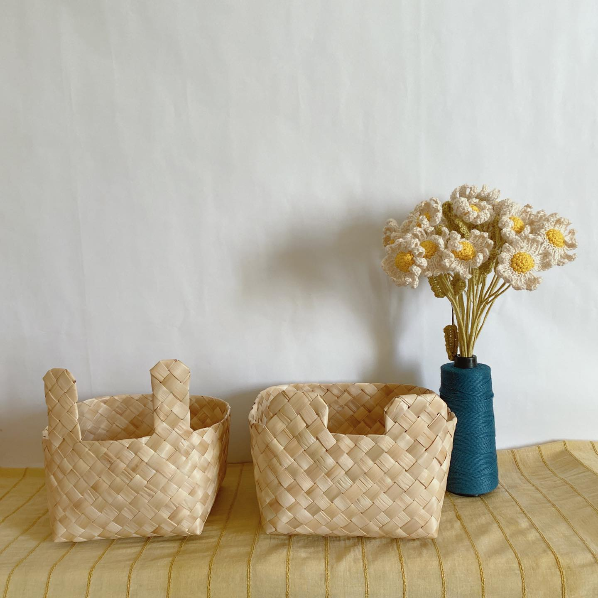

動物系列月桃盒
造型有貓咪、小熊、兔子，尺寸各有三種大小，皆方形與長形的款式。
/腳腳月桃盒.jpg)
腳腳月桃盒
腳腳系列，很適合擺飾在桌邊，晃晃小腳。
海洋生物月桃墊
鯨魚尺寸較大可當鍋墊，還有可愛的海龜月桃墊。
魚兒月桃杯墊
魚兒魚兒水中游~
長頸鹿月桃盒
長長的脖子，可愛的尾巴，想要你帶牠回家。
月桃編織馬
小馬奔跑~特別做出韁繩，可以晃晃繩子，想像在草地奔馳的感覺。
月桃編織梅花鹿
月桃梅花鹿，身上有特別花紋。
月桃編織籃
環保減塑膠，天然纖維，有獨特的月桃香氣。
精緻手捻線
現貨有棉、羊毛、天絲，有雙股與單股喔。
訂製手捻線
材質任選，也可提供纖維(毛小孩的毛毛)，捻製成線材。
特殊手捻線材
藝術紗線、段染線材、特殊纖維。
構樹手捻線
構樹的樹皮手捻雙股線材。
關於品牌
日復一日纖維工作室
種植×採集×織作
日復一日纖維工作室，同時紀錄著纖維創作的日常，接觸各種纖維材質，
目前有兩大主題，月桃編織與手捻線材，之後會陸續更新不同纖維相關的商
品，敬請期待～從種植纖維開始，認識的植物季節，學著如何處理纖維材料
的特性，才開始發想日常的物件，在漫長的織作過程，不斷重複的編織，日
復日的時間流逝，纖維的物件才慢慢塑形而出。